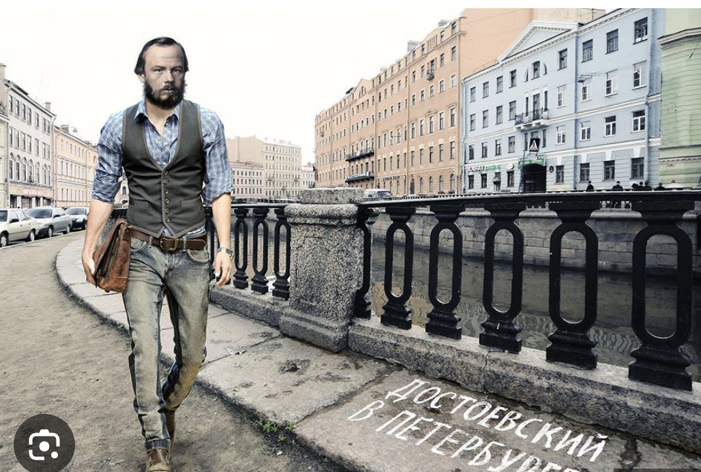
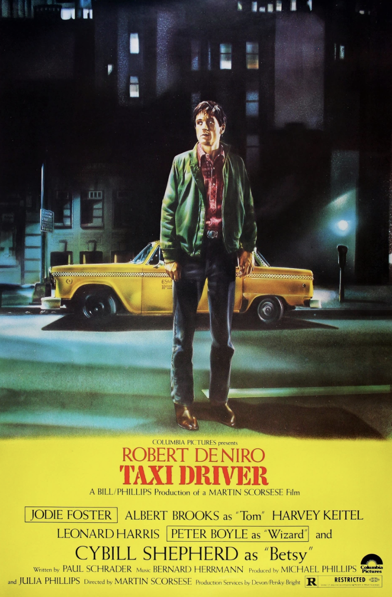

College of William & Mary
Russian 397: Major Works of Fyodor Dostoevsky (Fall 2025)
Description

Fig. 1. Dostoevsky in St. Petersburg :)
I.
Required Texts (purchase online):

Fig. 2.
Taxi Driver
(dir. Martin Scorcese 1976).
II.
Reading and Viewing Assignments
III.
Some Recommended Readings:
IV.
Visual Culture inspired by Dostoevsky's Works